Key Metrics
The Problem
Estates and facilities teams work with assets, spaces, COBie handover sheets, CAFM tickets, and BMS readings that rarely agree — classifications drift and reporting becomes untrustworthy.
The platform needed realistic demo data, checks based on industry standards (Uniclass, SFG20, COBie, HESA), and a clean warehouse plus BI layer that runs in plain Python, with an Airflow DAG for the daily schedule.
Architecture

Approach & Implementation
- Synthetic generators: two generator scripts produce 9 CSVs covering buildings, spaces, assets, COBie components, CAFM work orders, BMS half-hourly readings, surveys and statutory compliance. Bad records, such as an asset pointing at a space that does not exist, are injected on purpose so the checks have something to catch.
- Standards-based checks: Uniclass codes get a regex format check, COBie components a completeness check (93.3%, 56 of 60), SFG20 schedules a non-empty label check, and HESA mappings a 5-value whitelist. Failing rows are quarantined with a reason before load. The checks cover format, presence and whitelists; validating values against the official standard tables is the next step.
- Star schema load: cleansed records load into a SQLite star schema with
dim_building,dim_spaceanddim_asset. - BI spec with DAX: a Power BI specification defines tables, relationships and 10 DAX measures for condition, compliance and work-order reporting.
- Runnable anywhere: the pipeline runs in plain Python with no heavy services. An Airflow DAG defines the same steps as a daily run. One smoke test checks that the pipeline runs end to end.
Challenges & Solutions
Challenge: No shareable real estates data
Real asset and CAFM data cannot be shared, yet the warehouse and dashboards need realistic, joinable fixtures.
Solution: Cross-linked synthetic generators
Generators share key spaces and lookup tables so assets, spaces, tickets and sensor readings can be joined, while staying fully synthetic. Some inconsistency is deliberate: in the loaded warehouse, 65 of 107 assets carry a building_id that does not match their space's building, which is the kind of mismatch a real estates register has to be checked for.
Challenge: Standards drift breaks reporting
Bad Uniclass codes or incomplete COBie rows silently corrupt BI measures downstream.
Solution: Gate the load on validation
Uniclass, SFG20, COBie and HESA checks run before the warehouse load. Rows that fail are written to data/quarantine/ with a reason, so only rows that pass the format, presence and whitelist checks reach Power BI.
Outcome
The platform delivers a checked SQLite star schema plus a Power BI spec with 10 DAX measures, laid out for estates condition and compliance reporting. It flags cross-building mismatches too: 65 of 107 assets carry a building_id that disagrees with their space's building.
It runs end to end in plain Python for local demos, and an Airflow DAG defines the daily run.